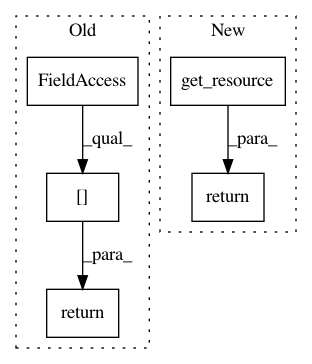

1f2254717516d4c388acb9a9645e8c23b74dc511,snips_nlu/resources.py,,get_stop_words,#Any#,79
Before Change
def get_stop_words(language):
return _STOP_WORDS[language]
def load_noises():
for language in get_all_languages():
After Change
def get_stop_words(language):
return get_resource(language, STOP_WORDS)
def load_noises(language):
if NOISE in RESOURCE_INDEX[language]:
In pattern: SUPERPATTERN
Frequency: 4
Non-data size: 5
Instances
Project Name: snipsco/snips-nlu
Commit Name: 1f2254717516d4c388acb9a9645e8c23b74dc511
Time: 2018-02-23
Author: clement.doumouro@gmail.com
File Name: snips_nlu/resources.py
Class Name:
Method Name: get_stop_words
Project Name: snipsco/snips-nlu
Commit Name: 1f2254717516d4c388acb9a9645e8c23b74dc511
Time: 2018-02-23
Author: clement.doumouro@gmail.com
File Name: snips_nlu/resources.py
Class Name:
Method Name: get_noises
Project Name: snipsco/snips-nlu
Commit Name: 1f2254717516d4c388acb9a9645e8c23b74dc511
Time: 2018-02-23
Author: clement.doumouro@gmail.com
File Name: snips_nlu/resources.py
Class Name:
Method Name: get_gazetteers
Project Name: snipsco/snips-nlu
Commit Name: 1f2254717516d4c388acb9a9645e8c23b74dc511
Time: 2018-02-23
Author: clement.doumouro@gmail.com
File Name: snips_nlu/resources.py
Class Name:
Method Name: get_word_clusters